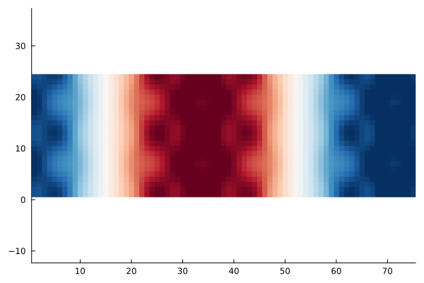
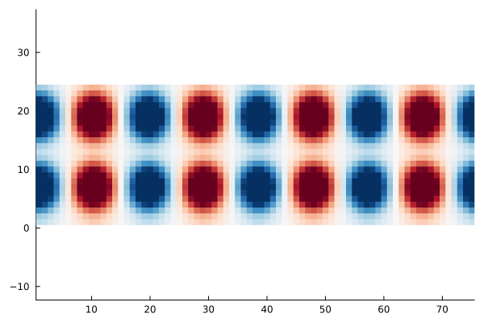

Analysing SCF convergence


The goal of this example is to explain the differing convergence behaviour of SCF algorithms depending on the choice of the mixing. For this we look at the eigenpairs of the Jacobian governing the SCF convergence, that is
\[1 - α P^{-1} \varepsilon^\dagger \qquad \text{with} \qquad \varepsilon^\dagger = (1-\chi_0 K).\]
where $α$ is the damping $P^{-1}$ is the mixing preconditioner (e.g. KerkerMixing, LdosMixing) and $\varepsilon^\dagger$ is the dielectric operator.
We thus investigate the largest and smallest eigenvalues of $(P^{-1} \varepsilon^\dagger)$ and $\varepsilon^\dagger$. The ratio of largest to smallest eigenvalue of this operator is the condition number
\[\kappa = \frac{\lambda_\text{max}}{\lambda_\text{min}},\]
which can be related to the rate of convergence of the SCF. The smaller the condition number, the faster the convergence. For more details on SCF methods, see Self-consistent field methods.
For our investigation we consider a crude aluminium setup:
using AtomsBuilder
using DFTK
system_Al = bulk(:Al; cubic=true) * (4, 1, 1)FlexibleSystem(Al₁₆, periodicity = TTT):
cell_vectors : [ 16.2 0 0;
0 4.05 0;
0 0 4.05]u"Å"
and we discretise:
using PseudoPotentialData
pseudopotentials = PseudoFamily("dojo.nc.sr.lda.v0_4_1.standard.upf")
model_Al = model_DFT(system_Al; functionals=LDA(), temperature=1e-3,
symmetries=false, pseudopotentials)
basis_Al = PlaneWaveBasis(model_Al; Ecut=7, kgrid=[1, 1, 1]);On aluminium (a metal) already for moderate system sizes (like the 8 layers we consider here) the convergence without mixing / preconditioner is slow:
# Note: DFTK uses the self-adapting LdosMixing() by default, so to truly disable
# any preconditioning, we need to supply `mixing=SimpleMixing()` explicitly.
scfres_Al = self_consistent_field(basis_Al; tol=1e-12, mixing=SimpleMixing());n Energy log10(ΔE) log10(Δρ) Diag Δtime
--- --------------- --------- --------- ---- ------
1 -36.73348129565 -0.88 12.0 341ms
2 -36.62153515407 + -0.95 -1.42 1.0 83.8ms
3 +38.05166791736 + 1.87 -0.12 8.0 228ms
4 -36.61189627498 1.87 -1.12 8.0 221ms
5 -35.93297284930 + -0.17 -1.10 3.0 141ms
6 -36.25834325368 -0.49 -1.22 4.0 150ms
7 -36.72541307474 -0.33 -1.72 3.0 125ms
8 -36.73158685781 -2.21 -1.98 2.0 101ms
9 -36.73756738298 -2.22 -1.95 2.0 125ms
10 -36.74081865327 -2.49 -2.22 2.0 104ms
11 -36.74200766616 -2.92 -2.34 2.0 103ms
12 -36.74230785903 -3.52 -2.60 1.0 94.6ms
13 -36.74241962797 -3.95 -2.84 2.0 97.4ms
14 -36.74243507746 -4.81 -2.82 2.0 100ms
15 -36.73927926423 + -2.50 -2.31 3.0 134ms
16 -36.74232098269 -2.52 -2.85 3.0 134ms
17 -36.74242626987 -3.98 -3.10 2.0 108ms
18 -36.73799827840 + -2.35 -2.24 4.0 153ms
19 -36.74247978695 -2.35 -3.72 4.0 145ms
20 -36.74247672634 + -5.51 -3.57 3.0 142ms
21 -36.74246846136 + -5.08 -3.33 3.0 130ms
22 -36.74247766626 -5.04 -3.77 3.0 130ms
23 -36.74248034880 -5.57 -4.09 1.0 88.4ms
24 -36.74248064761 -6.52 -4.59 2.0 125ms
25 -36.74248066512 -7.76 -4.83 3.0 116ms
26 -36.74248066649 -8.86 -4.81 2.0 103ms
27 -36.74248045563 + -6.68 -4.36 3.0 129ms
28 -36.74248065789 -6.69 -4.95 3.0 133ms
29 -36.74248067154 -7.86 -5.35 2.0 234ms
30 -36.74248067254 -9.00 -5.85 2.0 701ms
31 -36.74248067228 + -9.59 -5.68 3.0 137ms
32 -36.74248067229 -10.96 -5.75 3.0 124ms
33 -36.74248067264 -9.45 -6.09 2.0 116ms
34 -36.74248067263 + -10.98 -6.19 2.0 115ms
35 -36.74248067267 -10.42 -6.31 2.0 112ms
36 -36.74248067268 -11.38 -6.64 1.0 100ms
37 -36.74248067268 -11.34 -6.69 2.0 121ms
38 -36.74248067268 + -12.40 -6.84 2.0 104ms
39 -36.74248067268 -12.36 -6.93 2.0 98.5ms
40 -36.74248067268 -12.01 -7.21 2.0 100ms
41 -36.74248067268 -13.85 -7.09 3.0 122ms
42 -36.74248067268 + -11.66 -6.86 3.0 122ms
43 -36.74248067268 -11.63 -7.48 3.0 131ms
44 -36.74248067268 + -12.47 -7.18 3.0 136ms
45 -36.74248067268 -12.34 -8.23 3.0 126ms
46 -36.74248067268 + -14.15 -8.19 3.0 135ms
47 -36.74248067268 -13.85 -8.38 2.0 105ms
48 -36.74248067268 -14.15 -8.39 2.0 101ms
49 -36.74248067268 -13.85 -8.91 2.0 102ms
50 -36.74248067268 + -13.55 -8.90 3.0 139ms
51 -36.74248067268 -14.15 -9.29 1.0 89.4ms
52 -36.74248067268 -14.15 -9.65 1.0 92.7ms
53 -36.74248067268 + -Inf -9.53 3.0 133ms
54 -36.74248067268 + -14.15 -10.03 1.0 92.5ms
55 -36.74248067268 + -Inf -10.07 2.0 103ms
56 -36.74248067268 -14.15 -9.58 3.0 130ms
57 -36.74248067268 + -13.85 -10.17 3.0 131ms
58 -36.74248067268 -13.85 -9.82 3.0 131ms
59 -36.74248067268 + -Inf -10.47 3.0 131ms
60 -36.74248067268 + -13.85 -10.53 2.0 125ms
61 -36.74248067268 -13.85 -10.46 2.0 104ms
62 -36.74248067268 + -Inf -10.77 2.0 107ms
63 -36.74248067268 + -Inf -11.09 1.0 92.5ms
64 -36.74248067268 + -Inf -11.32 3.0 112ms
65 -36.74248067268 + -Inf -11.74 2.0 111ms
66 -36.74248067268 + -Inf -11.81 2.0 125ms
67 -36.74248067268 + -Inf -11.73 2.0 126ms
68 -36.74248067268 + -Inf -12.23 3.0 112mswhile when using the Kerker preconditioner it is much faster:
scfres_Al = self_consistent_field(basis_Al; tol=1e-12, mixing=KerkerMixing());n Energy log10(ΔE) log10(Δρ) Diag Δtime
--- --------------- --------- --------- ---- ------
1 -36.73334974613 -0.88 12.0 337ms
2 -36.74007238182 -2.17 -1.36 1.0 85.2ms
3 -36.73937937993 + -3.16 -1.65 3.0 126ms
4 -36.74225840820 -2.54 -2.19 1.0 89.7ms
5 -36.74237305696 -3.94 -2.57 5.0 111ms
6 -36.74241698598 -4.36 -2.46 3.0 120ms
7 -36.74247688271 -4.22 -3.18 1.0 91.1ms
8 -36.74247807363 -5.92 -3.16 3.0 113ms
9 -36.74247941672 -5.87 -3.29 1.0 92.4ms
10 -36.74247979845 -6.42 -3.81 1.0 89.2ms
11 -36.74248058819 -6.10 -4.18 2.0 117ms
12 -36.74248062902 -7.39 -4.29 1.0 96.3ms
13 -36.74248067016 -7.39 -4.67 2.0 132ms
14 -36.74248067204 -8.73 -5.05 2.0 100ms
15 -36.74248067234 -9.52 -5.50 3.0 123ms
16 -36.74248067261 -9.56 -5.79 5.0 111ms
17 -36.74248067268 -10.19 -6.23 2.0 126ms
18 -36.74248067268 + -11.63 -6.41 2.0 103ms
19 -36.74248067268 -11.21 -6.69 2.0 108ms
20 -36.74248067268 -12.56 -6.89 2.0 102ms
21 -36.74248067268 -13.45 -7.43 1.0 94.2ms
22 -36.74248067268 -13.30 -7.76 4.0 140ms
23 -36.74248067268 + -Inf -8.13 7.0 127ms
24 -36.74248067268 -14.15 -8.24 2.0 126ms
25 -36.74248067268 + -13.85 -8.58 1.0 95.7ms
26 -36.74248067268 -14.15 -9.15 1.0 94.0ms
27 -36.74248067268 -13.85 -9.24 3.0 138ms
28 -36.74248067268 + -Inf -9.67 1.0 93.8ms
29 -36.74248067268 + -14.15 -9.98 2.0 123ms
30 -36.74248067268 + -13.85 -10.53 1.0 95.6ms
31 -36.74248067268 + -Inf -10.70 4.0 140ms
32 -36.74248067268 -13.85 -10.98 2.0 108ms
33 -36.74248067268 -14.15 -11.26 5.0 114ms
34 -36.74248067268 + -13.67 -11.41 2.0 126ms
35 -36.74248067268 -13.85 -11.71 1.0 90.8ms
36 -36.74248067268 + -Inf -11.95 3.0 125ms
37 -36.74248067268 + -Inf -12.12 1.0 94.1msGiven this scfres_Al we construct functions representing $\varepsilon^\dagger$ and $P^{-1}$:
# Function, which applies P^{-1} for the case of KerkerMixing
Pinv_Kerker(δρ) = DFTK.mix_density(KerkerMixing(), basis_Al, δρ)
# Function which applies ε† = 1 - χ0 K
function epsilon(δρ)
δV = apply_kernel(basis_Al, δρ; ρ=scfres_Al.ρ)
χ0δV = apply_χ0(scfres_Al, δV).δρ
δρ - χ0δV
endepsilon (generic function with 1 method)With these functions available we can now compute the desired eigenvalues. For simplicity we only consider the first few largest ones.
using KrylovKit
λ_Simple, X_Simple = eigsolve(epsilon, randn(size(scfres_Al.ρ)), 3, :LM;
tol=1e-3, eager=true, verbosity=2)
λ_Simple_max = maximum(real.(λ_Simple))44.02448898035782The smallest eigenvalue is a bit more tricky to obtain, so we will just assume
λ_Simple_min = 0.9520.952This makes the condition number around 30:
cond_Simple = λ_Simple_max / λ_Simple_min46.244211113821244This does not sound large compared to the condition numbers you might know from linear systems.
However, this is sufficient to cause a notable slowdown, which would be even more pronounced if we did not use Anderson, since we also would need to drastically reduce the damping (try it!).
Having computed the eigenvalues of the dielectric matrix we can now also look at the eigenmodes, which are responsible for the bad convergence behaviour. The largest eigenmode for example:
using Statistics
using Plots
mode_xy = mean(real.(X_Simple[1]), dims=3)[:, :, 1, 1] # Average along z axis
heatmap(mode_xy', c=:RdBu_11, aspect_ratio=1, grid=false,
legend=false, clim=(-0.006, 0.006))
This mode can be physically interpreted as the reason why this SCF converges slowly. For example in this case it displays a displacement of electron density from the centre to the extremal parts of the unit cell. This phenomenon is called charge-sloshing.
We repeat the exercise for the Kerker-preconditioned dielectric operator:
λ_Kerker, X_Kerker = eigsolve(Pinv_Kerker ∘ epsilon,
randn(size(scfres_Al.ρ)), 3, :LM;
tol=1e-3, eager=true, verbosity=2)
mode_xy = mean(real.(X_Kerker[1]), dims=3)[:, :, 1, 1] # Average along z axis
heatmap(mode_xy', c=:RdBu_11, aspect_ratio=1, grid=false,
legend=false, clim=(-0.006, 0.006))
Clearly the charge-sloshing mode is no longer dominating.
The largest eigenvalue is now
maximum(real.(λ_Kerker))4.723595267865664Since the smallest eigenvalue in this case remains of similar size (it is now around 0.8), this implies that the conditioning improves noticeably when KerkerMixing is used.
Note: Since LdosMixing requires solving a linear system at each application of $P^{-1}$, determining the eigenvalues of $P^{-1} \varepsilon^\dagger$ is slightly more expensive and thus not shown. The results are similar to KerkerMixing, however.
We could repeat the exercise for an insulating system (e.g. a Helium chain). In this case you would notice that the condition number without mixing is actually smaller than the condition number with Kerker mixing. In other words employing Kerker mixing makes the convergence worse. A closer investigation of the eigenvalues shows that Kerker mixing reduces the smallest eigenvalue of the dielectric operator this time, while keeping the largest value unchanged. Overall the conditioning thus workens.
Takeaways:
- For metals the conditioning of the dielectric matrix increases steeply with system size.
- The Kerker preconditioner tames this and makes SCFs on large metallic systems feasible by keeping the condition number of order 1.
- For insulating systems the best approach is to not use any mixing.
- The ideal mixing strongly depends on the dielectric properties of system which is studied (metal versus insulator versus semiconductor).